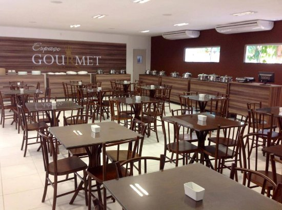

Educação
Matrículas na Educação Básica em Floriano
Localização:
Tipo de Escola:
Fonte dos dados: Sinópses da educação básica - INEP, acesso em 12/02/2022 | Arte: estadosecidades.com.br
| Floriano | IDEB PI | IDEB Brasil | |
|---|---|---|---|
| Ensino Fundamental - anos iniciais | 6,0 | 5,4 | 5,7 |
| Ensino Fundamental - anos finais | 4,9 | 4,6 | 4,6 |
| Ensino Médio | 4,0 | 3,7 | 3,9 |

Economia
Saúde

UBS Raimundo Filho
Endereço: Rua Major Carlindo, s/n - Catumbi
Telefone:
Enfermeira: Heláyne Carvalho Pereira
UBS Camilo Filho
Endereço: BR 343 KM 03
Telefone:
Enfermeira: Thais Cristina Nunes da Silva e Meyerilene dos Santos Ferreira
UBS Dirceu Arcoverde
Endereço: Av. Dirceu Arcoverde
Telefone:
Enfermeira: Kivia Maria Resende Nunes Coelho